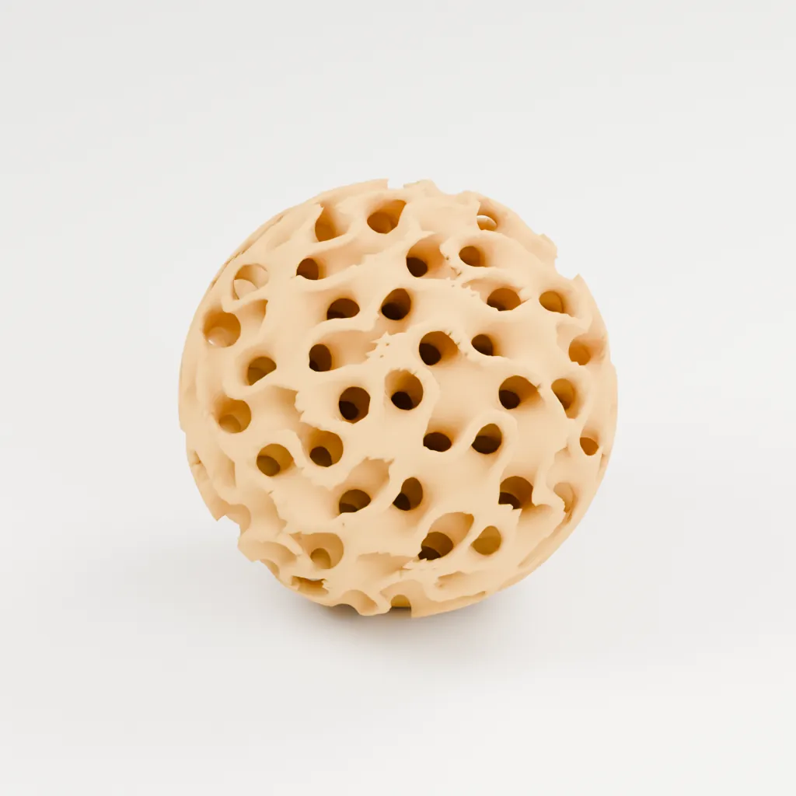

Start with a primitive, carry a profile along a path, join sections, or describe a volume by a field. Each maker takes a name and returns a part in its own frame.
Lengths use the program's unit, millimetres unless units is set first. Angles are in degrees. These primitives are centred in X and Y and rest on Z = 0; place them with at. A sphere's centre is therefore at half its diameter, not at the origin. This convention does not recenter a supplied path, a hull's points or a body's views.
box is extrude(name, rect(w, d), h). Extruded primitives have faces bottom, top and side, including the inside wall of a tube. Revolved surfaces use side, with bottom or top on horizontal faces where they exist. A sphere has no planar top cap. Use ob.face to read a face's frame and bbox for a bounding-box side, edge or corner. A face frame starts at the projection of the origin onto that face; on a box based at Z = 0, a vertical face's origin is at its foot.
box, cylinder, tube, cone
box(name, w, d, h)
cylinder(name, d, h)
tube(name, d, d_in, h)
cone(name, d, h, d2=0)
Build a block, a cylinder, a hollow sleeve or a cone along Z. Each grows from Z = 0 to its height.
w
Box width along X; its d is depth along Y.
d
Diameter for cylinder, tube and cone; the cone's bottom diameter.
d_in
Through-hole diameter of the tube.
d2
Cone's top diameter; zero gives a point, a positive value a truncated cone.
Sphere, wedge, torus and dome. The torus's outside diameter is d + d_wire.
Limits. Wedge face labels come from its extrusion across Y: top and bottom refer to the two Y ends. Read its upward face by direction when it has a flat top.
A profile describes a filled outline, including any holes. Extrusion gives it depth; revolution turns its radial cross-section around an axis. Neither operation needs a mesh drawn vertex by vertex.
Push a profile along its plane's normal, local +Z. Use on to build directly on a face frame or another Frame; the profile stays drawn in that plane.
h
Extrusion height. With both=True this is the total height, split equally above and below the plane.
h2
Additional depth below the plane when not using both.
taper
Wall angle in degrees; positive narrows from the lowest end upward, negative widens.
twist
Total rotation in degrees from the lowest end to the highest, about the drawing's origin.
on
Drawing frame, for example another part's face("top").
until
A Frame's plane or a solid's surface, instead of h. A solid surface is sampled; a plane is exact.
Limits. Give h or until. until cannot be combined with taper, twist or both. Its plane must not run parallel to the extrusion. Faces are bottom, top and side.
Turn a radial profile about Z. Draw its X coordinate as radius and Y coordinate as height; a list of (radius, height) points also works as a closed outline.
angle
Turn in degrees; 360 closes a full revolution. A partial turn has start and end caps.
Use sweep when one profile follows a path, wire for a circular or elliptical section, and loft when the sections themselves change. Open ends have caps start and end; their walls are side. Sweep and loft caps are not called bottom and top.
poly and spline(points, closed=True) make planar profiles. For a 3D path use spline(points); use loop=True for a closed spline path. Build a spline and its wire inside the same facets(...) context so their resolutions agree.
Carry a profile square to a path, turning its axes as little as possible. A closed path gives a ring; frenet=True instead makes the section axes follow the path's curvature.
scale
End ratio, starting at 1; a positive (sx, sy) pair scales each profile axis separately. A length law controls intermediate sizes.
twist
End rotation in degrees, starting at zero, or a length law of angles.
Build a solid smoothly through profiles placed with at, or sections made with station. Use it for a bulge, a changing cross-section or a drifting centre line.
sections
At least two placed profiles, each one outline without holes. A section is a profile, not a solid or a (profile, Frame) pair.
follow
Turn each section square to the line through the section centres, keeping its X across it.
loop
Join last to first with no end caps; needs at least three sections.
Make a solid rod along 3D points, a spline, an arc or a helix. Use it for stems, cables and bent bars; it does not make a hollow pipe.
d
Constant circular diameter, constant elliptical (width, thickness), or a law of circular diameters.
closed
None keeps the path's closure; True closes it, False opens it.
fillet
Centre-line bend radius for point paths, or a list of radii at the points; zero leaves a corner. Repeated points are treated as one.
rings
Extra rings per span, or explicit arc-length fractions strictly inside (0, 1).
Limits. fillet only applies to raw point paths. A bend radius must be at least half the largest diameter, fit the adjoining sides and not turn back on itself. Diameter laws need an open path.
Paths from branches already live in the frame carrying its on: pass axis.path and axis.d to wire without applying on again. Matching diameter laws also work with sweep.
Laws, poles and tips
A law is a list of (u, value) pairs with finite values, starting at u = 0 and ending at u = 1, strictly increasing by arc length. Values interpolate with shape-preserving monotone cubics. Sweep scale laws accept either scalar values or (sx, sy) pairs, consistently throughout the law. Plain numeric scale and twist, and a plain end-scale pair, interpolate linearly from the start.
Size laws reject negative values, interior zeros, partly zero pairs and all-zero laws. A zero end is a pole: one outline, without holes, closes to a point. The default round end uses a monotone square-root profile that meets the adjoining body tangentially. Sizes are never silently reduced. Crossing-ring diagnostics give the path fraction and a size limit in program units: sweep reports a section radius; fixed-facet wire reports a diameter and a verified uniform diameter factor. Use the reported factor: apply it to the profile or every diameter, or round the path.
For a zero-size first or last loft section, only its position matters. Its rotation is ignored. The neighbouring section, after follow turns it, supplies the pole's tangent plane. The cap stays inside its end interval without overshooting the neighbouring sections.
tip
At a zero end
"round"
Smooth rounded closure, the default
"sharp"
Linear end span to a point
"flat"
Replace zero size with the neighbour's size and cap in the end plane
Pass one tip for both ends or (start, end) to choose separately. Nonzero ends are always capped. rings adds sampling within spans; it does not change a bad path into a valid one.
The same diameter law with round, sharp and flat tips, from left to right.
Resolution and construction coordinates
A fixed facets(n) controls turns per revolution across and along sweep, loft, wire, body and spline paths. Straight spans keep their stations; rings adds a count of samples, whereas a field's cell is a length. Fixed counts shade flat by default; use smooth=True on the first facets call or a part's smooth override for smooth shading. facets("auto") targets a 0.05 mm chord tolerance; primitive arc sampling is bounded to 24–64 segments per full turn. See Resolution for budgets.
Loft, wire and sweep carry construction coordinates. A five-argument colour callback receives u: progression along loft sections or along wire/sweep arc length, with caps at their end values. Revolve, dome, sphere, cone and cylinder carry bottom-to-top progression. displace(coords="path") reads arc length, transported angle and construction radius, not the edited mesh's measured shape. Placement, copies and deformations keep these labels; joins between parameterized parts transfer them, with the first operand's labels at intersections. Booleans with unparameterized operands, blend, field and new topology drop them; merge fills missing labels with NaN. See material and displace for callback contracts.
From views and points
Both makers keep the coordinates you supply. They do not shift the result to the ground or centre it automatically.
body
body(name, plan, top, bottom, n=2)
Build a body along Y from a top view and two side outlines. Its sections are superellipses centred on X = 0, useful for a hull, fuselage or animal's main mass.
plan
(y, full width) points, or a spline through those points.
top
(y, z) points or a spline for the upper outline, or a constant height.
bottom
The lower outline in the same form as top.
n
Section squareness, default 2 for an ellipse; a number or (y, n) values.
The plan gives the full width. The side outlines meet at both ends to close the body to points.
Limits. Lists interpolate straight, splines smoothly. Repeated y values make a shoulder. At a pointed end both width and side height must close together. Otherwise ends are flat caps, start toward -Y and end toward +Y; walls are side.
Rings of frames and a tip point define each quartz crystal.
Limits. Needs at least four distinct non-coplanar points. Faces are unnamed: read them by direction, such as face("+Z"). Edges are rim. facets does not add points or round the hull.
For an organic outline, vary hull points or loft superellipse sections first, then displace at the outline's scale before adding fine grain. Surface noise alone leaves a regular silhouette.
Turn a scalar density into a closed mesh, retaining density(x, y, z) < level. This describes pores and connected volumes without supplying profiles.
size
Positive finite (width, depth, height) sampling box, centred in XY and extending from Z = 0 to height.
density
Pure deterministic function of local x, y, z; return finite scalar values or a matching NumPy array.
cell
Positive finite sampling length, in program units.
level
Finite density threshold, in the same arbitrary scalar unit as density.
min_component_cells
Drop components whose longest extent is under this many cells, default 3. Always keep the largest; zero keeps all.
Example

import numpy as np
import sand3d as s3d
def sea_sponge(seed=0, d=100, pore=26, cell=2.1):
def density(x, y, z):
z, k = z - (d + 4 * cell) / 2, 2 * np.pi / pore
ball = np.sqrt(x * x + y * y + z * z) - d / 2
gyroid = np.sin(x * k) * np.cos(y * k) + np.sin(y * k) * np.cos(z * k) + np.sin(z * k) * np.cos(x * k)
wobble = s3d.noise(x / pore, y / pore, z / pore, seed=seed)
return np.maximum(ball, np.abs(gyroid + .3 * wobble) - .5)
sponge = s3d.field("sponge", (d + 4 * cell, d + 4 * cell, d + 4 * cell), density, cell=cell)
return s3d.assembly("sea_sponge", s3d.material(sponge, "sand", color="#d9a441"))
A spherical envelope intersects a periodic porous field. NumPy evaluates the density in batches.
Limits. Faces are field. A direction face falls back to the furthest outward-facing triangle if no facet is parallel. Empty or singular surfaces, non-finite samples and cells below mesh precision are refused.
Coordinates, box size and cell are lengths. Each axis is evenly sampled at spacing no greater than cell, with at least two intervals. With fixed facets(n), the effective cell is max(cell, π * max(size) / n): low counts can erase small cavities. Leave a one-cell margin around the intended surface. Boundary samples are forced outside, so a surface touching the box closes within its outermost cell.
The fast callback receives three same-shaped float64 arrays and returns an ndarray of that shape. Use np.sqrt, np.sin, np.minimum and np.maximum, rather than math or Python min and max. A trial call that raises TypeError or ValueError, returns a non-array or has the wrong shape selects scalar evaluation. Programs may import NumPy.
Choose cell for the smallest feature: about half the thinnest wall or two thirds of the smallest relief that must read. Features below cell can disappear. Triangle count and work grow roughly as surface area / cell²; halving cell costs about four times as much. As a planning estimate, a closed surface 1.5 m across at 7 mm cells can reach about two million triangles, depending on its shape.
Above one million lattice points the sampler first probes four-cell blocks. A separate component hidden between those probes can be missed, so the coarse four-cell scale must resolve it too. Budgets are one million coarse probes, eight million fine samples and four million triangles. Increase cell to reduce cost. Disconnected closed shells are allowed.
Composing density and height
Use noise or waves inside a density function to shape a field. Density below level is solid. For bounds, coordinates, wave parameters and composition examples, see Paths and fields. Resolve density features with cell; use displace to add relief to an existing mesh.
Filling a container
fill
fill(name, container, level, clearance=None)
Make a new solid in the voids retained below a level, keeping the container. Use it for water in a basin or soil in a pot; all retained pockets become one object.
container
Closed manifold part, group or assembly, or a list of parts with a Frame level.
level
Height in the container's frame, or a Frame whose normal points out of the fill. An unbound Frame is in world space.
clearance
None overlaps walls by about 0.04 mm. An explicit length gives a gap if positive, overlap if negative, exact contact if zero.
A solid basin retains water. Waves displace only its top face, keeping the shore fixed.
Limits. A level below the floor, above an open rim or reaching a leak raises ValueError if nothing is retained. Leaking pockets are dropped when other pockets retain material.
A cup's opening is a space between solid walls, not missing mesh faces. Closed cavities also count, even without a free surface. Clearance offsets walls, not the level; it is a small allowance, and large values can self-intersect or collapse thin features.
The result inherits the level plane's axes and stands on its own Z = 0. Its origin lies under the level's origin at the deepest point. Local Z reaches the free surface, labelled top, with boundary edges also top; remaining faces are side. On a tilted plane local X and Y lie in that surface, so waves and displacement along +Z follow the tilt. Use a bound frame such as local(channel, z=12, ry=3) to tilt a level with its container.
Fill is static geometry: no flow, meniscus, trapped air or search for a spill level. A tilted channel needs closed ends below the plane. Surface-only ripples use faces="top" with displace; the selection boundary keeps the shore fixed.
Ready-made parts
These parts grow along Z from zero, with bottom, top and side faces. They build geometry for the teeth and ridges.
 sand3d
sand3d GitHub
GitHub